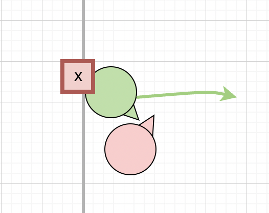
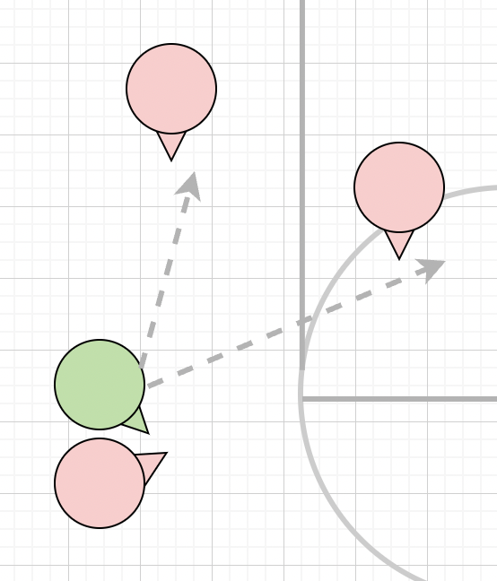
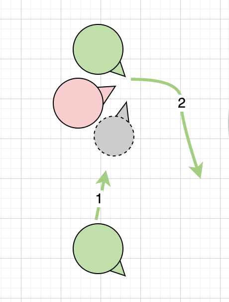

Options when you are picked out
It is common for a player to be picked out away from Basket, specially when returning to defend. Some of these could not be avoided, however good to have a plan for when you are picked out.
Avoid being picked out on sidelines as player can block you in
If picked out near side line, try to move towards the middle.

When you are picked out, look for any opposition player lower than you and pick on them. You will lose against 2 players however another player coming down to pick for them will cost them seconds, or sometimes you slow 2 players.
When picked out, if there is a player with the ball, try to pick on them, likely to be an easier pick.
Call for help
Shout to team for help and move the player to allow pick
Offence or defence, it is better for your player to be inside (near basket), so turn the player towards the line if possible.
When pick is set, turn towards the pick to clear the player, ensuring not enough gap for offensice player to come through
Ideally work with the pick to keep the player behind rather than leaving the pick to deal with the player.

What if no help coming
If no help coming, keep moving the chair and try to keep the player engaged to use up seconds
Look for turn over ball and possibility of fast break since you are already out of defence
Or pick on similar level player and create man-out play for team.